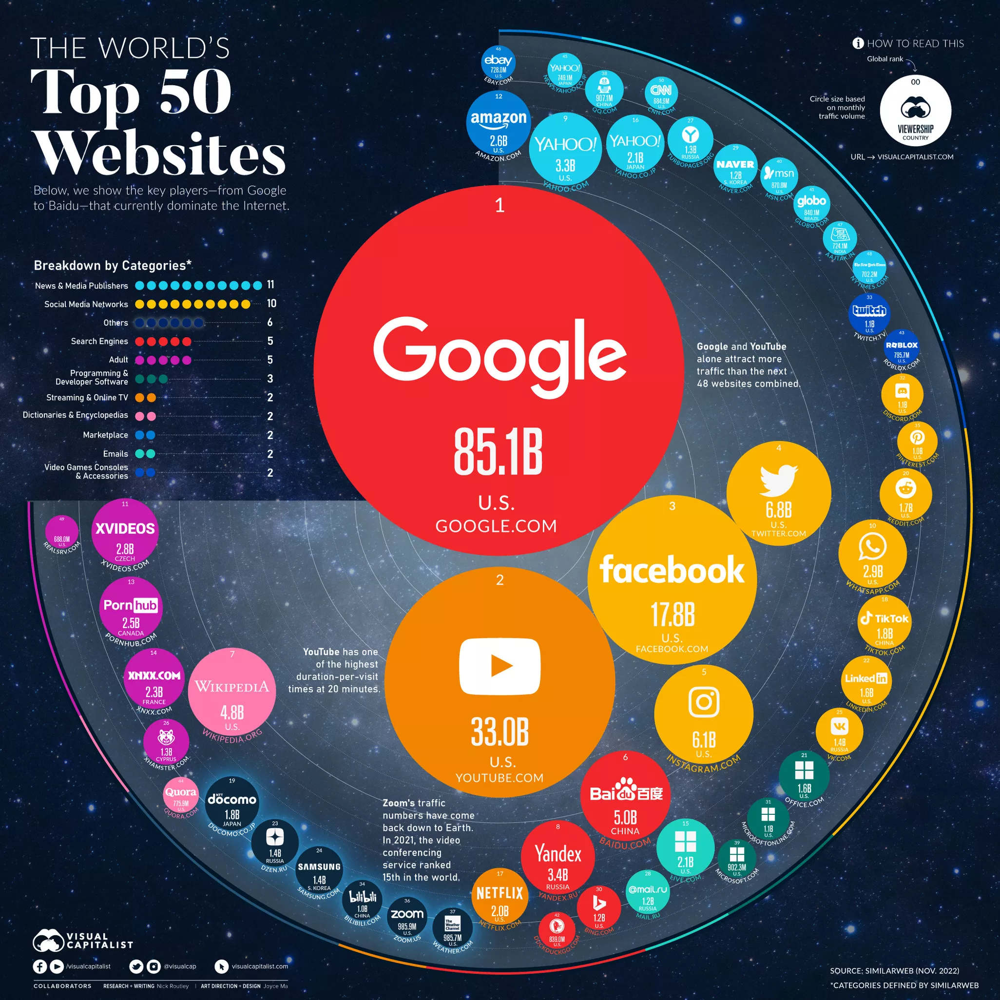

Assignment 1 Reflection
I decided to include this item in my portfolio since it was the first coding assignment we were tasked with. I was excited to be hands on finally as that's typically the way I learn the best, which is by actually using what I am learning.
I learned about using both Plotly and Tableau during this assignment (and also what chorpleth means!). I also learned how to do a random scatter while doing the beeswarm plot in Tableau.
This will help me out of class, since making visualizations has always been part of what I want at my job. After this, I have some new skills I can use at work, and a leg up for when I want to learn a new type of visualization software
Data manipulation and data structures have always piqued my interest, so finding new ways to do the same data task was interesting for me.

The above visualization was the first visualization I made for this assignment with Plotly. It was pretty easy once I figured out how I wanted to use the dataset, which was create an aggregated list of all the sums of totals spent and received by the countries.

This my Tableau rendition of the same visualization. I couldn't figure out how to directly sum each country's donations, so I split the dashboard in to two separate choropleths.
This was my beeswarm plot of donations sent through the decades which was made in Plotly. It was not too difficult to make, however I wish it was easier to customize the options.

Lastly, this was the Tableau version of the beeswarm plot. This version was much easier to make, and I was also able to add two different types of encodings for the donation amounts by using both area and also the vertical position within the visualization.
Marks and Channels Reflection
Chapter 5 In-Class Activity
I chose this in-class activity to reflect on since it was an important topic for this class. Understanding the marks and channels that go into a visualization is key to creating something that is succint and easy to interpret.
From this assignment, I learned how to identify marks and channels, however, I am not sure if I was completely correct for all of my guesses. If we were to do more guided sessions for this topic, it would be quite helpful.
I will innately use marks and channels in my career whenever I need to make a visualization. It will also be helpful to know what the most effective channels are for different types of data.
The wind visualization shown later sparked my curiosity, since I had never seen a map visualization like it. It is also not very common to see tilt as a channel for magnitude.
The above image was helpful during identification.
This visualization was not very good, 3D size is not a good channel for magnitude in this case.
This visualization was a mess, but it was a good example of connections.
This was my favorite visualization of the bunch, it used the marks and channels effectively. Using tilt was also interesting for me.
Group Project Reflection + Refinement
It was a simple choice for me to choose to refine the group project since it was the most difficult assignment in the class. Collaboration is a difficult but necessary skill in this field, and effectively working in a team was a great learning experience.
During this assignment, I learned about D3.js the most. It is an extremely powerful JavaScript library and I enjoyed using it despite the learning curve. It was performant and had templates I was able to extend.
I was curious about zoom interactions in data visualizations. I was also curious about information on demand, and I was able to make a system for it in my visualizations.
Group Project Best Practices
Our team during the group project was effective in creating a refined project. We had a single project manager, two programmers, a technical writer, and a data engineer role.
The project manager role is key in any development team, since their task is to prevent the other members from having to focus on anything else but their task. Having a person to talk with the customer (Professor) to get deadlines and tasks, while also preventing scope creep. They should also be communicating with the team to track progress. This is necessary in case other members are needed to help on aspects of the development process that are lacking.
The programmers are what actually make the product, so it should be the largest group of people in a development team. Typically, one of the programmers should also be designated as a tech lead. The tech lead should be the person making major decisions such as tech stack, code formatting and style guides, and assigning work to the other programmers based on their skills. It is also their job to relay to the project manager status updates based on their work.
The technical writer role is under appreciated in the development world. Not having a technical writer causes a significant amount of technical debt in the long run. Technical writers should be deeply involved in the development process, but not actually be writing any code. It is important for them to focus on updating documents and making sure any new developers can easily understand what they are working with in a timely fashion. Technical writers should aim to cover as much of the code as possible. They should also be able to describe overall system structure.
Lastly, the data engineer is important to get the programmers what they need to make the visualizations or product. Manipulating data to be in a viable format can be difficult which is why data engineers should be working with the programmers constantly. They should be completely focused on making things such as aggregation pipelines, queries, and models to allow the programmers to focus on visuals.
Best Worst Bake off Reflection
This was my favorite activity (although I sadly missed the deadline and felt rushed for my worst visualization post (my fault)). It was interesting to see just how bad a visualization can get. I found my bad visualization by browsing through the r/dataisugly subreddit. I found my good visualization simply by searching for "Best Visualizations" on google.
Worst
I appreciated this vizualization's background.
Best
I thought colors on this were pretty.